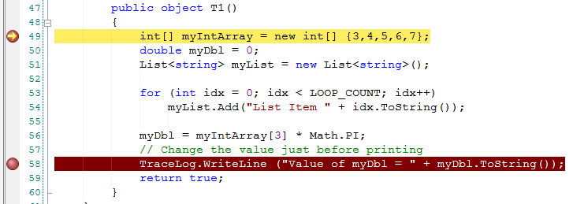
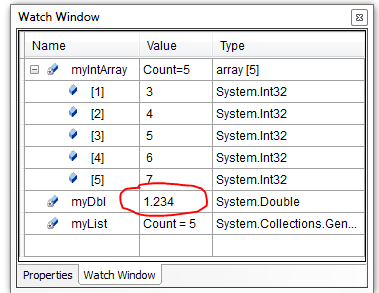
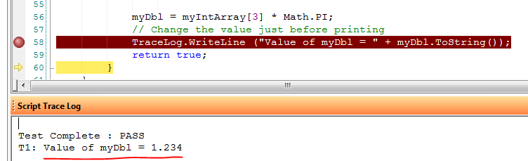
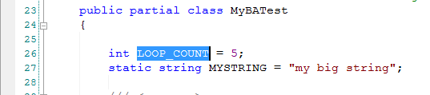
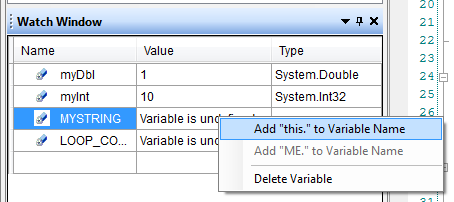
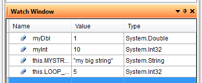

Watch
Window
The watch
window is used to examine the values of variables in the test program. By
default, the Watch Window is not visible until a breakpoint is reached in debug
mode. It is then docked in front of the Properties Page. To toggle the
visibility of the Watch Window, click Watch Window (Debug) from the View
menu. You may also click the Watch Window icon  in the Debug
toolbar to show the Watch Window.
in the Debug
toolbar to show the Watch Window.
The
variables to be watched in the Watch Window must be selected by the user.
You may either type in the variable name or drag in the variable from the test
script. To manually type in a variable name, double-click or press
F2 on the first
empty row in the Watch Window in the Name column. The cursor changes to
allow editing. Type in the name of the variable to be
watched (case insensitive for VBScript) and press Enter. To drag a variable
into the Watch Window, highlight the variable name in the test script (or double
click it) and drag
it anywhere into the Watch Window. To delete a variable from the Watch
Window, click on the variable to delete and press the Delete key.
When the
test program is run in debug mode and breaks at a breakpoint, the variables in
the Watch Window that are within the current scope will be shown with their
current value and type, if available. If a variable is within scope but
has not yet been initialized, the value will be "Empty" for VBScript
and <null> for .NET. If a
variable is out of scope (not a global variable and not local to the current
procedure), the value will be "Variable is undefined". When
stepping through the code, the values in the Watch Window will be updated as
they are changed. You can manually change the value of a variable in the
watch window when the debugger is in a break state by deleting the current
value in the watch window and entering the new value.
Example:
The following shows an excerpt from a test program where the user has pulled in three variables to monitor. Note the program is stopped in debug mode on line 49. Line 49 has not executed yet and so the variables have not been initialized.
|
|
 |
The user runs (press F5) to move to the next break point. Now, all the local variables have been initialized. The Integer Array is expanded to show the contents of the array (Note: the index limit on the watch window is 256 items per array).
|
|
|
The user can change the variable value at any time for simple types (strings, integer, double, etc). Here, the user double-clicks on the "myDbl" value in the Watch Window and enters a new value (1.234). Upon execution (press F10 to step over the next line), we see the TraceLog print statement print the new value of myDbl as 1.234. Note that "Edit-and-Continue" is NOT supported at this time in the debugger. Any code changes will not be implemented until the test program completely stops and is re-executed.
|  |  |
 |
 |

See
Also
Debugger Overview | Debugger Commands | Locals Watch Window | Command Window
EADS
North America Test and Services
Last updated on 5/10/2012 by I. Williams